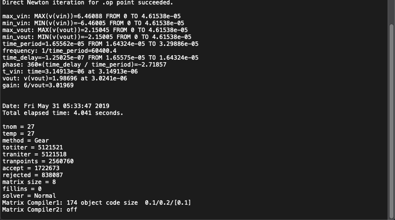

Teórico - simulação
Circuito fechado (comparação):
Freq.: 60,396k
Ganho: 3,017
Fase: 2,725
Aquisição teorico (com carga):
Freq.: 60,398k
1/Ganho: 3,009
Fase: -2,736
Aquisição teorico (sem carga):
Freq.: 60,400k
1/Ganho: 3,019
Fase: -2,718

Prático - simulação
Aquisição pratico (com carga):
Freq.: 64,595k
1/Ganho: 3,078
Fase: -2,993
Aquisição pratico (sem carga):
Freq.: 64,598k
1/Ganho: 3,085
Fase: -2,976